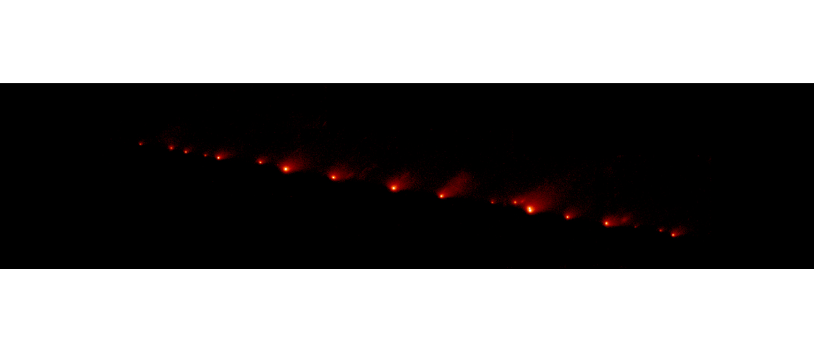
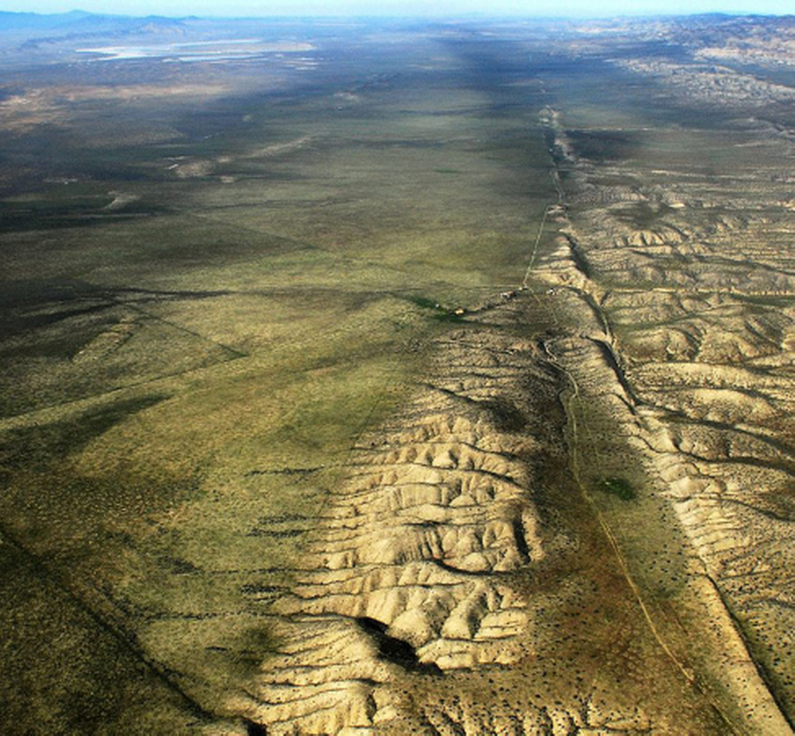
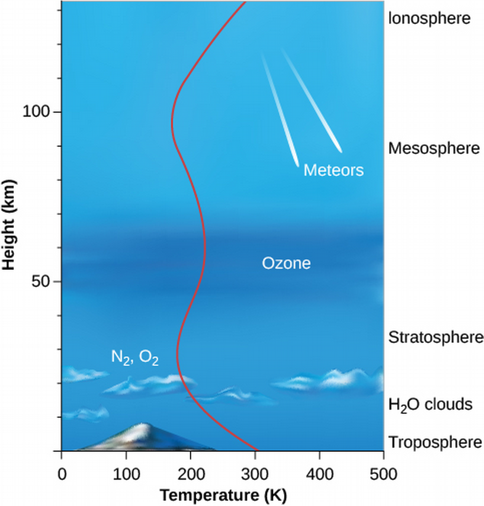
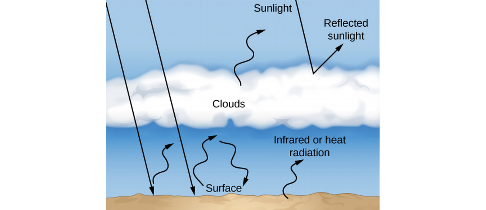

ASTR101 Ch 7-8
Table of Contents
- Ch 7 - Other Worlds: An Introduction to the Solar System
- Ch 8 - Earth as a Planet
Ch 7 - Other Worlds: An Introduction to the Solar System
Overview of our Planetary System
- Solar system: Sun, planets, moons, rings, debris (asteroids, comets, dust).
- All formed together around 4.5 billions years ago.
- Every planet has been flown past, orbited, or landed on by a probe.
- Probes have penetrated Jupiter's atmosphere and landed on Venus, Mars, the Moon, Saturn's moon Titan, and asteroids and comets.
An Inventory
- Planets orbit on the same plane, while dwarf planets don't.

- Four terrestrial planets; Mercury, Venus, Earth, and Mars—small, made of rock/metal.
- Four jovian, or giant planets: Jupiter, Saturn, Uranus, Neptune—large (1400 Earth fit in Jupiter, EC), made of ice, liquid, and gas.

Smaller Members of the Solar System
- Only Mercury and Venus are without moons.
- Largest moons are the Moon, 4 Galilean moons (Jupiter), and Titan (Saturn) and Triton (Neptune).
- Each of the giant planets has a ring with orbiting bodies ranging in size from dust to mountain.
- Asteroids are remnants of the formation of the solar system, some of them were likely captured as small moons.
- Comets are also remnants of solar system formation, but are made of ice (eg, carbon monoxide/dioxide, water) and orbit farther out.
- Meteors are broken rock (cosmic dust) and burn up if they enter Earth's atmosphere, become a meteorite if they hit the ground.
A Scale Model of the Solar System
- The text presents a scale model of the solar system, scaled down by 109.
Composition and Structure of Planets
The Giant Planets
- Recall there are the rocky terrestrial planets and icy jovian planets—they must have formed under different conditions.
- Largest planets Jupiter and Saturn close to Sun in composition. Heavier elements sink to rocky, metal, ice center, bulk is liquefied hydrogen.
- Uranus and Neptune also have a core of rock/metal/ice, but smaller atmospheres.
The Terrestrial Planets
- Most abundant rocks are silicates, made of silicon and oxygen, and most common metal is iron. Mercury has the greatest proportion of metal, the other 3 have similar composition of 2/3 silicates and 1/3 iron-nickel/sulfur combinations.
- Terrestrial planets also have denser matter in center of planet, leading to theory that they were once also liquid. Process of separating a planet's interior layers into different compositions and densities is called differentiation, which occurs when the planet is hot (melting point of rocks, ~1300K), and stays as the planet cools.
Moons, Asteroids, and Comets
- Most moons share the composition of their planet (rocky for terrestrial moons and icy with a hard core for giant planets' moons)
- Only the largest asteroids are differentiated.
Temperature: Going to Extremes
- Remember the light intensity falls as \(1/r^2\); this light also provides heat. The temperature reduces approximately as \(\frac{1}{\sqrt{r}}\), so the farther you are from the Sun, the colder it gets. Mercury (.39 AU from the Sun) is about 500 K, while Pluto (39.5 AU from the Sun) is 50 K.
- Remember, planetary atmosphere has a big effect on this; heat kept in by greenhouse effect; in which atmosphere has greater transparency to (incoming) visible radiation than (outgoing) infrared. The effect results in Venus having greater temperature than Mercury!
- Earth is the only planet we know of with surface temperature generally matching liquid phase of water.
Geological Activity
- Planets shaped in part by comet collisions—mostly during solar system formation, but even now; eg., Comet Shoemaker-Levy 9 with Jupiter, Summer 1994, which came within 660 million km.
- Internal forces can build mountains and build new islands; eg, volcanoes, earthquakes. Earth and Venus are most active planets, and even some jovian planet moons are active! The Moon has been dead and inactive for billions of years.
- Hawai'i's getting a new island by 32,018! (maybe)
- Earth and Venus have molten cores.


Dating Planetary Surfaces
Count the craters
- Rate of impact has been pretty constant for several billion years.
- Can only count to date when the planet "smoothed itself out" through, eg, lava flow.
- Can also be used to date smoothing events and date terrain.
Radioactive Rocks
- Some radioactive nuclei are unstable and can split apart (decay) to other nuclei, at random times.
- But we do know their half-life; the time for approximately half of them to decay in a large sample.
- The original unstable nuclei are the parents and they split apart to daughter particles.
- Every half-life, half of the particles will have decayed; this is the principle behind Carbon dating!

Origin of the Solar System
- An exoplanet is a planet outside of the solar system. Some of these range between the terrestrial and giant planets in size; termed superearths.
- In some exoplanet systems, the giants are close to the star and the terrestrial planets are farther (to be discussed in ch 21)!
Looking for Patterns
- Planets orbit the Sun (and, mostly, themselves) counter-clockwise, and the Sun orbits itself counter-clockwise, evidence that the Sun and planets may have formed from a spinning cloud of gas and dust called the solar nebula.
- Sun, Jupiter and Saturn have similar compositions, evidence they may have been formed from the same material reservoir.
- Terrestrial planets have less of these materials, since at their temperature so close to the Sun the materials would evaporate (whereas they're liquid/ice/gas in the vicinity of the giant planets).
The Evidence from Far Away
- We can compare this present data to star systems far away that are in varying stages of formations like that of the solar system to get a good picture of the birth of the solar system.
- The name for solar nebulas (the cloud posited to birth the solar system) outside of the solar system is circumstellar disks.
Building Planets
- As planets form from circumstellar disks common around young stars, we begin to see planetesimals—planet foetuses. Computer simulations with Physics laws taken into account support these theories.
- Still leaves the questions; why do Uranus and Pluto spin on their sides, why does Venus spin slowly around itself retroactively? These could be the results of early collisions.
Ch 8 - Earth as a Planet
The Global Perspective
Earth's Interior
- With a diameter of 12,756, how can we study Earth's innards?
- One way is to by measuring the transmission of seismic waves, sound waves that travel inside the Earth due to, eg, earthquakes or explosions. Just like a bell rings differently based on its shape and material distribution, the seismic waves change as they go through Earth.
- Seismic waves are measured at various locations, which has determined an inner composition for the Earth.

- The crust is the outermost layer, covered 55% by water by 6 km thick oceanic crust, made typically of basalt, volcanic rock produced from cooled lava, while 45% is 20-70 km-deep continental crust, made typically of granites, a class of silicates made from silicon and oxygen. .3% of Earth's mass.
- The mantle is the largest layer, going down to about 2900 km. It's pretty solid, though at these pressures/temperatures rocks can slowly move and deform. Density of 2.5-5 g/cm3.
- The core is dense and metallic with a diameter of 7000 km, larger than Mercury. The outer core is liquid, and the inner core (2400 km in diameter) may be solid.
- Evidence for differentiation is that the Earth's bulk density is 5.5 g/cm3 while its surface density is only 3 g/cm3.
Magnetic Field and Magnetosphere
- Moving ions in Earth's core create a giant magnetic field so that the Earth acts like a bar magnet; the region where this field dominates the Sun's magnetic field is called the magnetosphere, whose outer limit is the magnetopause.

- Charged particles moving in space become trapped in this magnetic field; namely, the solar wind, a collection of charged particles spreading outwards from the Sun's activities. This shapes the magnetic field of the Earth away from the Sun.
- High-energy ions are trapped in regions of the magnetosphere called the Van Allen Belt.
Earth's Crust
Composition of the Crust
- Largely oceanic basalt and continental granite (as discussed), both igneous rock (cooled lava, or molten rock).
- Sedimentary rocks are wind or water-deposited rock fragments that bind together without melting, such as sandstone, shales, and limestone.
- Metamorphic rocks are igneous rocks changed by high temperature and pressure.
- Neither sedimentary nor metamorphic rocks are common on other planets!
- Primitive rock is the material of the planetary system that hasn't undergone heating—there's none from Earth itself, since Earth was in a molten state.
Plate Tectonics
- Geology is the study of the Earth's crust and the causes of its shape.
- Plate tectonics explains the slow drift of continents and large geological features; it's a fundamental theory describing the heat transport of the Earth. A heat transport mechanism is created in the evolution of all planets, based in part on the planet's composition.
- From the crust outwards, Earth is divided into about a dozen tectonic plates which are moving, slowly.
- The plate movement is powered by convection, or heat transfer by the movement of cold and hot material, of the mantle. Convection mixes the milk in your coffee! https://www.instagram.com/p/BmQ57IQFLCl/?utm_source=ig_web_button_share_sheet

Rift and Subduction Zones
- Tectonic activity manifests in the crust as rift zones where tectonic plates pull apart from each other, with molten rock filling the space.
- Most rift zones are now in oceans, the central African rift is an example of a continental rift zone.
- As two plates drift apart, the plates overlap with other plates in subduction zones, most common with thinnner, oceanic plates.
- This is how mountain ranges are formed, while the ragged peak shapes of mountains is from water/ice erosion (unlike on Mercury or the moon, which lack water).
- 60 thousand km of active rifts identified, drifting apart at 4 cm/year.

Fault Zones and Mountain Building
- Plates also slide parallel to each other in faults, also at a rate of centimeters per year.
- Motion is not smooth, but builds up stress in the crust released in sudden slippage (earthquakes).
- The average motion of the tectonic plates is constant, so the longer the time between earthquakes, the more violent the earthquake.
- Eg, Parkfield, CA has slipped 1 m every 25 years or so, but LA has earthquakes for 7 m of slippage every 150 years. The last time LA had an earthquake was 1857.

Figure 8: San Andreas Fault
Volcanoes
- Where lava rises to the surface.
- Mid-ocean ridges are underwater mountain ranges formed by rising lava at plate boundaries.
- Lava flowing from long cracks can form lava plains.
Earth's Atmosphere
- Pressure is force per unit area, and the atmosphere's pressure on us at Earth's surface is 1 bar, or 1.03 kg/cm2. Compare to 300 bars average ocean floor pressure.
- Atmosphere's mass is 5×1018 kg, about a millionth Earth's total mass.
Structure of the Atmosphere
- Most of the atmosphere in troposphere, within 10 km of Earth's surface, containing convection currents.
- Followed by stratosphere, which rises to 50 km, cold and cloudless, with ozone (O3) on top (absorbs UV).
- Thin atmosphere above 100 km, ionosphere is where lighter (often ionized) atoms can leave the Earth!

- Stratosphere has ozone (O3) on top, which absorbs ultraviolet light so we can survive. We were destroying ozone with chlorofluorocarbons (CFCs), causing a hole in the ozone layer over the Antarctic, so an international agreement bans these chemicals.
Atmospheric Composition and Origin
- The air we breathe (at Earth's surface) is 78% N2, 21% O2, 1% Ar, with traces of water vapor, carbon dioxide, water droplets, dust particles, etc. A volatile material evaporates at low temperatures.
- This composition has changed during Earth's history, as studied, e.g., in the chemistry of minerals forming at different times.
- Theories for source of Earth's atmosphere and oceans:
- Formed with the rest of Earth from Sun debris.
- Released from interior through volcanic activity.
- Formed by comet/asteroid impacts
- Evidence favors combination of 2 and 3.
Weather and Climate
- All planets have weather; the circulation of atmosphere.
- Mostly powered by surface heat from sunlight, and convection currents.
- Climate refers to atmospheric effects that last decades and centuries, which accumulate.
- A change in 2° C would cut wheat production in half in North America, or melt enough glaciers to raise sea level by 10 m, flooding many cities and islands!
- Earth has had ice ages, the last of which lasted 20k years, 14k years ago, with ice nearly 2 km thick covering Boston and NYC.
Life, Chemical Evolution, and Climate Change
The Origin of Life
- Astrobiology studies the origins, distribution, and future of life in the universe.
- Chemical evidence suggests life precedes the oldest surviving rocks (3.9 billion years old).
- 3.5×109 years ago, we had stromatolites—blue-green photosynthesizing micro-organisms—which still exist today!
- Fossils only preserved since 600 million years.
- Early Earth atmosphere was CO2 and CH4 (methane) but no oxygen gas, which supports chemical reactions leading to productions of the building blocks of life (amino acids, proteins, etc.)
- Tens of millions of years after Earth's formation, large molecules (like viruses) existed in seas.
- Depleted food in nutrient-rich seas, then began evolutionary process in search for other food sources.
- Can study DNA in genetics or genomics, the study of shared genetics among Earthly beings.
- Most diversity of life in microbial level. There are more microbes in a bucket of soil than stars in the Galaxy!


- Ideas that life may have begun in extremely hot locations on our planet.
- Life may have begun on Mars (which cooled sooner) and transferred somehow to Earth.
The Evolution of the Atmosphere
- Key evolutionary step is blue-green algae which takes in CO2 and releases oxygen; these gave rise to plants! Plants make use of photosynthesis, taking advantage of sunlight energy for their internal growth.
- Still not a lot of oxygen until 2 billion years ago due to Earth's crust's chemical reactions.
- After that, oxygen formed Earth's ozone (O3) layer, which allowed life to leave the ocean (before this, landmass was barren of life).
- Plants create oxygen which allows for animal life. Animals ate plants. Eventually, breathed oxygen directly from atmosphere.
The Greenhouse Effect and Global Warming
- Greenhouse gases reflect infrared but allow sunlight through; water vapor, methane, CO2.
- Currently raises temperature by 23 °C on Earth (necessary!), but increasing (bad).

- Burning fossil fuels uses up oxygen (referred to as oxidizing process) and releases CO2.
- Forests create oxygen from CO2, but we're cutting those down.
- In the past century, atmospheric CO2 increased by 30% (post-industrial revolution);
- Still rising at .5%/year.
- See https://climate.nasa.gov/evidence/
- For common misconceptions, https://www.skepticalscience.com/argument.php?f=taxonomy.


Human Impacts on Our Planet
- We helped some animals go extinct with hunting.
- Relieved a lot of tree from standing up with lumbering.
- Making sure planet doesn't get cold with global warming.
- Anthropocine, a suggested name for the current epoch highlighting humans as the dominant influence on our planet's atmosphere and ecology.
Cosmic Influences on the Evolution of Earth
- Moon has craters from cosmic collisions long ago; where are Earth's craters?
- Earth was affected by about as many craters as the Moon (they are neighbors).
- Earth's active geology smooths out its surface.
- Crater impacts have had an important evolutionary influence.
Recent Impacts
- June 30, 1908, in Siberia, an explosion 8 km above the surface flattens 1000 km2 of forest, killing reindeer and other animals and marking peaks in pressure measuring instruments. Equivalent of 5 megaton nuclear bomb.
- Winter 2013, Chelyabinsk, Russia, .5-megaton explosion at height of 21 km.
- A lump of iron 40 m in diameter created the Meteor Crater in AZ 50,000 years ago with 10-megaton nuclear bomb.

Figure 14: Meteor Crater, AZ

Mass Extinction
- Even larger meteors have a global effect.
- Marking the end of the dinosaur age 65 million years ago at the end of the Cretaceous period in a time of mass extinction when more than half the species on the planet died out ("the great dying"), in Mexico's Yucatan peninsula, with mass greater than a trillion tons measured from layer of deposited sediment, a meteor creates the Chicxulub crater.
- The sediment is rich in iridium (rare on Earth but abundant in comets and asteroids) which demonstrates mineral characteristics of the temperatures and pressures of a gigantic explosion.
- So how did the dinosaurs die, around the planet?
- Lifted 100 trillion tons of dust into atmosphere, blocking sunlight for several months, killing plants and herbivores, creating large-scale fires (burning debris), and making rainwater acidic.
Impacts and the Evolution of Life
- There are a dozen or so mass extinctions on geological record, "fun" fact.
- Following each mass extinction is a sudden evolutionary burst; the latter resulted in mammals to thrive.
- Earth is posited to have been struck by objects 1000 larger than the Chucxulub meteor in its early history, boiling Earth's ocean and stripping its atmosphere, and perhaps wiping life out several times.
- Oldest survivings Earthly microbes are thermophiles (adapted to high temperature).
Impacts in Our Future?
- Not improbable that something should collide with Earth in the future.
- Good news, no Chicxulub-sized asteroids heading our way (thanks for checking, NASA).
- Still probing for asteroids on collision with Earth. So far so good.